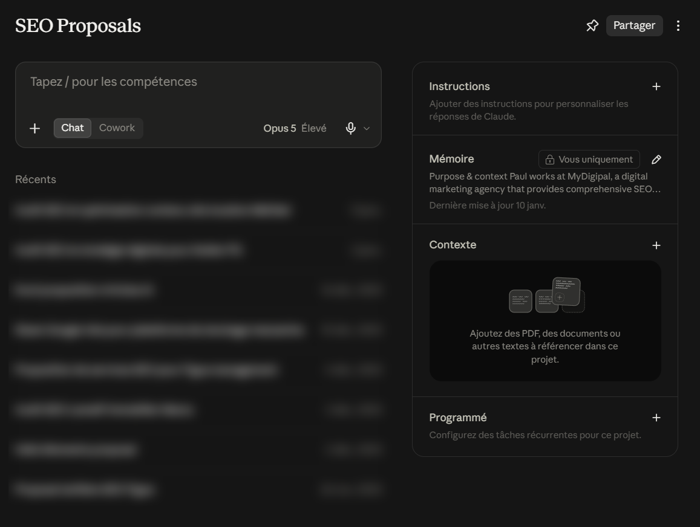

Formation Claude - Anthropic
La méthode de prompting d'abord, le parcours Claude ensuite, puis les automatisations. Cours en ligne, à votre rythme, en français.

Ce que vous apprenez à piloter
Trois choses que presque personne n'utilise, et qui font la différence entre une conversation et un outil de travail. Touchez un repère doré sur l'écran.
Les projets
Un projet garde vos documents, vos instructions et ce que Claude a retenu de vous. Vous ne réexpliquez plus qui vous êtes ni ce que vous vendez à chaque conversation.
Leçon M4C-L02 : Les projets Claude, contexte et mémoire.
Survolez un repère doré
À la sortie
Pas des connaissances sur l'IA. Des choses que vous rendez à quelqu'un.
Trois rapports déposés dans un projet, une note d'une page qui dit ce qui a changé et ce qu'il faut décider.
Un export brut en entrée, un tableau de bord à l'écran en sortie, que vous ajustez en parlant.
Le brief, le plan, puis les diapositives. Vous gardez la main sur l'argument, pas sur la mise en forme.
Ses documents, son ton, ses contraintes. Vous ouvrez, vous demandez, il sait déjà de quoi vous parlez.
Une tâche planifiée qui lit, trie et vous rend un bilan pendant que vous faites autre chose.
Une méthode de choix entre Claude, ChatGPT, Copilot et Gemini, qui ne se périme pas à la prochaine sortie.
La méthode, appliquée à Claude
Ce que la formation change tient dans cet écart. Cinq pièces à poser dans la demande : le contexte, le rôle, l'action, le format, le ton.
VousRésume-moi ces documents.
Voici un résumé des documents fournis. Le premier présente les résultats du trimestre, le deuxième détaille les actions menées, le troisième revient sur les objectifs annuels. Dans l'ensemble, la performance est contrastée et plusieurs leviers pourraient être activés.
Vous
Le parcours Claude
Elles arrivent après la méthode de prompting, et avant les automatisations. Vous choisissez un outil, et le parcours ne garde que celui-là.
Honnêtement
Une formation qui ne dit que du bien de son outil ne sert à rien le jour où l'outil coince.
Le parcours se choisit au module 4, et il se change. Si vous travaillez déjà toute la journée dans une autre suite, commencez par là.
Le programme complet
Ce que vous achetez est une formation à l'intelligence artificielle au travail. Claude en est la porte d'entrée pratique.
Les tarifs
Le parcours complet, votre outil compris, l'assistant qui répond pendant que vous apprenez, et l'attestation à la fin. Rien n'est facturé au mois.
Vous pourrez ajouter les automatisations plus tard, sans repayer ce que vous avez déjà.
La méthode
290 € TTC
montants lus dans l'application
Questions
Non pour commencer. Les premières leçons se suivent avec la version gratuite d'Anthropic. Les projets, les connecteurs et les tâches planifiées demandent un abonnement chez Anthropic, que nous ne vendons pas et qui ne passe pas par nous. La formation dit exactement à quel moment ça devient nécessaire.
La méthode est la même pour les quatre outils, et c'est elle qui compte. Le parcours outil se change quand vous voulez : vous suivez celui de Copilot à la place, et rien d'autre ne bouge dans votre formation.
Comptez sept à huit heures de lecture et d'exercices sur le parcours, étalées comme vous le souhaitez pendant vos soixante jours d'accès. La plupart des apprenants font une leçon par jour, le matin, sur une trentaine de jours.
En ligne, à votre rythme, avec des exercices relus par un humain. Si vous cherchez une session animée en salle ou à distance pour votre équipe, c'est une autre offre et nous la faisons aussi.
Oui, une attestation nominative à la fin du parcours, qui liste les domaines couverts et le volume réellement suivi. Elle ne remplace pas un diplôme et nous ne prétendons pas le contraire.
Pour toi, pas pour la page
| Champ | Valeur | Caractères |
|---|---|---|
| Titre du frontmatter | Formation Claude IA en ligne : le programme | 42 / 37-47 |
| Titre rendu | Formation Claude IA en ligne : le programme | MyDigipal | 55 / 50-60 |
| Description | Formation Claude en ligne : la méthode de prompting, les projets et connecteurs d'Anthropic, puis les automatisations. 8 leçons sur Claude, à votre rythme. | 156 / 145-160 |
| H1 | Formation Claude : apprendre l'IA avec l'outil d'Anthropic | unique |